「首都圏"直下"型、"プレート境界"型、"アウタ－ライズ"型」地震
●【「首都圏"直下"型、"プレート境界"型、"アウタ－ライズ"型」地震】
～～～～～～～～～～～～～～～～～～～～～～～～～～～～～～
2012年2月4日『首都直下地震の想定見直し、Ｍ８級も検討へ』
 http://www.yomiuri.co.jp/science/news/20120204-OYT1T00653.htm
http://www.yomiuri.co.jp/science/news/20120204-OYT1T00653.htm
> 内閣府は２０１２年度から、首都直下地震対策を見直し、関東大震災（１９２３年）のような相模トラフ沿いで起こるプレート境界型の巨大地震についても対策を検討する。
> 相模トラフ沿いのマグニチュード（Ｍ）８級地震は２００～４００年間隔で起こると考えられ、今後１００年以内に発生する可能性が極めて低いことから、これまでは検討の対象外だった。しかし、東日本大震災が防災上の想定を超えた規模だったことを教訓に、考えられる最大規模の地震を対象に加えることにした。
> また、これまでの首都直下地震対策の対象である東京湾北部や立川断層などを震源とするＭ７級の１８タイプの地震についても、最新の研究成果を踏まえ、被害想定を見直す。今年度まで続いている文部科学省の重点調査では、海のプレート（岩板）が陸のプレートの下に潜り込む深さが、従来の想定より５～１０キロ浅いことなどが判明。これまでよりも震度の想定が大きくなる可能性がある。
参考
2012年2月6日『首都圏直下型地震の対策見直し』
http://www.best-worst.net/news_VnfHyG71y.html
～～～～～～～～～～～～～～～～～～～～～～～～～～～～～～
2011年5月20日『“首都圏壊滅”３・１１超え巨大地震が…米研究チーム“警告”』
http://www.zakzak.co.jp/society/domestic/news/20110520/dms1105201615027-n1.htm
> 巨大津波が発生した東日本大震災。今後の地震次第では、首都直撃の可能性もゼロではない
> 今後、福島と茨城両県沖で大規模な地震が起きる…。そんな物騒な分析結果を米国の研究チームが発表した。東日本大震災から２カ月を過ぎ、余震の回数も少なくなってきているが、油断は禁物、まだまだ危険というのだ。
> 米国の研究チームが１９日付の米科学誌サイエンスに発表したもので、過去１１００年間の地震活動の記録を踏まえて分析したとしている。
> それによると、福島、茨城両県沖では１９３８年の地震（Ｍ８・１）以降、１年間に約８センチの地殻変動があり、７３年間でプレートが約６メートル沈み込んでプレート境界でひずみが蓄積したという。
> 今回、この地域で起きたＭ７・９の余震を考慮すると、今後起きる地震は、過去の地震よりも大きくなる可能性があると結論づけ、「今後起こり得る地滑りの範囲を見定めるため、周辺を監視することが必要だ」と警鐘を鳴らしている。
> これでいくと津波で、首都が直撃される可能性もあるが、日本の研究者はどうとらえているのか。
>
> 「地震学の見地からすると常識的な見解ですよ」と指摘するのは地震学が専門の琉球大名誉教授、木村政昭氏。
> 「２００４年、インド洋スマトラ沖でＭ９の巨大地震が起きた後、３カ月後にＭ８・７の地震が発生した。先の研究はこういう例やＧＰＳで（大陸等の動きを）観察したことなども踏まえ、結論づけている。可能性は否定できないですね」
> 木村氏の研究でもエリアこそやや違うが、今後、規模の大きい地震が起きる公算は「ゼロではない」とみる。
> 「今回、東北で大地震が起き、この地域のストレスがとれたとすると、次に警戒しないといけないのは、東北より北と南。私は北海道と茨城県南部、千葉県北部を注視しています。安全の常識として踏まえておくことが大切なんです」
～～～～～～～～～～～～～～～～～～～～～～～～～～～～～～
2012.5.31『房総半島南東沖で「Ｍ８」級の可能性 予知連で報告』
http://sankei.jp.msn.com/affairs/news/120531/dst12053107590003-n1.htm
> 関東大震災などの大地震が起きる相模トラフ沿いで、房総半島南東沖のプレート（岩板）境界が単独で滑り、数百年間隔でマグニチュード（Ｍ）８級の地震を起こす可能性のあることが産業技術総合研究所の調査で分かった。３０日の地震予知連絡会で報告された。
>
> 相模トラフはフィリピン海プレートが陸側プレートの下に沈み込む場所で、Ｍ８級の関東地震が起きる。震源域は相模湾と房総半島南東沖に大別され、前者は関東大震災の震源域で、両者が連動すると大規模な元禄型関東地震が発生。房総半島南東沖が単独で地震を起こすことは想定されていなかった。
>
> 元禄型関東地震の発生間隔は約２３００年とされるが、プレートの沈み込み速度や房総半島の隆起年代と矛盾する点があり、南東沖だけが頻繁に動くとうまく説明できるという。過去の活動歴は分かっていない。
『相模トラフ 震源域』図
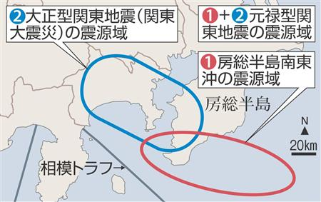
～～～～～～～～～～～～～～～～～～～～～～～～～～～～～～
2011年10月31日『房総沖でスロースリップ観測…地震発生早める？』
http://www.yomiuri.co.jp/science/news/20111031-OYT1T01098.htm
> 防災科学技術研究所は３１日、千葉県の房総半島沖で、地下のプレート（板状の岩盤）がゆっくりと滑る「スロースリップ」を観測したと発表した。
>
> 過去３０年間、約６年ごとに確認された現象が、今回は最短の４年２か月間隔で発生した。東日本大震災の影響とみられ、同研究所の広瀬仁・主任研究員は「大地震の予測に結びつくわけではないが、大震災が関東地方での地震発生を早めている可能性も考えられ、解析を続けたい」と話している。
>
> 防災科研が１０月２６日、地下に埋設した高感度加速度計の観測結果を解析したところ、千葉県勝浦市沖合の海面から深さ約２０キロ・メートルにある、海側のプレートと陸側のプレートの境界の地盤がゆっくり移動していた。移動した地盤は東西約８０キロ南北約２０キロの範囲で、３１日までに南東方向に約６センチずれ動いていた。
～～～～～～～～～～～～～～～～～～～～～～～～～～～～～～
《参考書籍》
『大地震の前兆をとらえた！---警戒すべき地域はどこか』｛＜著者＞木村 政昭（きむら・まさあき） ＜発行所＞第三文明社｝参照．
グラフを見る限り、地震の目 ”サイスミック・アイ”が発生してから２０年以上になっているようです。
”サイスミック・アイ”が発生してから、本震に至るまでの期間は、約３０年。
もうそろそろＭ６．５以上の本震が、 ”サイスミック・アイ”および その付近に発生してもおかしくないと用心すべきなのです。
また、「千葉県北東部活動域（Ｃ）」が存在している付近は、「東京湾北部（Ａ）」や「茨城県西南部（Ｂ）」に見られたような、１９２３年に発生した関東地震の影響による異常地震活動が見られない地域です。
Ｃは、少なくとも関東地震の影響によってできた古傷、すなわち良性の ”地震の影”ではないと言う事ができるでしょう。
逆に言えば、何もなかった所に発生する地震活動域が真性の ”サイスミック・アイ”となるので、注意が必要と思われます。
”サイスミック・アイ”を時系列から推測して見ましょう。
…ｅ１（ ”ｅ”は ”木村”氏が提唱している ”サイスミック・アイ”の ｅｙｅ（目）の意）の始まりを１９８３年と読み取ると、１９８３＋３０年＝２０１３年となります。
誤差を見積もると、２０１３±４年に大地震発生の可能性ありと計算されます。
一方、現在「千葉県北東部」にできている ”サイスミック・アイ”を震央として、火山と噴火の時空曲線を作って、診断してみます。
付近の火山で活動しているのは浅間山です。
「千葉県北東部活動域」は、１９８７年に発生した千葉県東方沖地震と同じ太平洋プレート内で起きているのですから、千葉県東方沖地震の前兆となった浅間山を基準にするのは間違いではないでしょう。
２００４年、浅間山は２１年ぶりに爆発しました。
これはＰ２（ ”Ｐ”は ”木村”氏が提唱している火山活動の ”Ｐｈａｓｅ”（フェーズ）、または ”Ｐｅａｋ”（ピーク）の意）段階の主噴火とみる事ができます。
一方、距離ですが、浅間山と「千葉県北東」の仮想震央は、約２００キロ離れています。
このデータを ”時空曲線”に入れてみると、６年後に地震が発生と言う事になります。
すなわち、２００４＋６＝２０１０年となり、これに誤差を±３年と読み取ると、２０１０年±３年頃に大地震が発生すると計算されます。
これは震の目 ”サイスミック・アイ”発生後、３０年で本震に至ると言う計算（２０１３±４年）と比べても誤差の範囲内で一致します。
火山活動はプレート移動の影響が目に見える形で現われていると考えられますから、予測において火山活動が利用できる時は、火山から算出された数字は重く見るべきでしょう。
これらを平均すると「千葉県北東部」に大地震が発生するのは、２０１１±４年と予測されます。
地震の規模は ”サイスミック・アイ”の長さから判断されます。
”サイスミック・アイ”の長さは、割れる断層の長さを示していると考えられるからです。
この断層の長さをマグニチュードに換算するとＭ７．４ほどになります。
経験的に これは最大のマグニチュードを示すようなので、誤差を踏まえて、この場合Ｍ６．５～Ｍ７．４の大地震が推測されると言う事になります。
………………………………………………………………………………
> 「千葉県北東部活動域」は、１９８７年に発生した千葉県東方沖地震と同じ太平洋プレート内で起きているのですから、千葉県東方沖地震の前兆となった浅間山を基準にするのは間違いではないでしょう。
> ２００４年、浅間山は２１年ぶりに爆発しました。
> これはＰ２（ ”Ｐ”は ”木村”氏が提唱している火山活動の ”Ｐｈａｓｅ”（フェーズ）、または ”Ｐｅａｋ”（ピーク）の意）段階の主噴火とみる事ができます。
つまり，前述した『浅間山：小規模噴火 ４００メートルの噴煙上がる 降灰は見られず ／長野』の記事はＰ３（ ”Ｐ”は ”木村”氏が提唱している火山活動の ”Ｐｈａｓｅ”（フェーズ）、または ”Ｐｅａｋ”（ピーク）の意）段階の始まりの可能性があると言う事になります．
”木村”氏によると火山活動のＰ２～Ｐ３の後に その火山活動と関連性がある地域に地震が発生するとの事です．
------------------------------------------------------------
『浅間山：小規模噴火 ４００メートルの噴煙上がる 降灰は見られず ／長野』より引用．
http://mainichi.jp/area/nagano/news/20080811ddlk20040021000c.html
気象庁は１０日、浅間山（２５６８メートル）で同日午前２時３７分、ごく小規模の噴火が発生したと発表した。浅間山の噴火は０４年１２月９日以来、３年８カ月ぶり。県が黒斑山頂に設置している監視カメラ映像によると、灰白色の噴煙が約４００メートル上がり、東南方向に流れるのが確認された。
気象庁は同日、上空から火口の観測をしたが、火口周辺の降灰は見られず、地上からも国道１４６号、１０００メートル林道などの降灰も観測されなかった。
また、山体の膨張を示す地殻変動は観測されず、中規模以上の噴火の兆候はないとしているが、二酸化硫黄の放出量が日量１１００～１３００トンと多いため、火口から約２キロ範囲に影響する噴火の可能性はあるという。
浅間山は、今月６日以降、１日の発生回数が１００回を超えたため８日、噴火警戒レベル１（平常）からレベル２（火口周辺規制）に引き上げた。自治体では、山頂から５００メートル立ち入り規制を約２キロメートル規制に切り替え、登山者へ注意を呼び掛けている。
------------------------------------------------------------
『長野県 浅間山』
http://maps.google.co.jp/maps?f=q&hl=ja&geocode=&q=%E9%95%B7%E9%87%8E%E7%9C%8C+%E6%B5%85%E9%96%93%E5%B1%B1&ie=UTF8&ll=36.27085,138.867188&spn=3.068867,4.345093&z=8&iwloc=I
～～～～～～～～～～～～～～～～～～～～～～～～～～～～～～
『関東平野の基盤構造』
http://staff.aist.go.jp/msk.takahashi/Subsurface.html
> ハーフグラーベンの前面に存在する正断層により基盤深度が急激に変化することから，大地震の際には地震波の増幅を引き起こす可能性が考えられます．したがって，地震防災の観点からは，浅層の地下地質構造の把握とともに深層の構造，とくに伏在しているハーフグラーベン分布をおさえることが重要であると考えられます．
>
> 関東平野下に伏在するハーフグラーベン群は地震波を増幅するだけでなく，場合によっては活断層として活動する可能性もあります．たとえば，活断層である立川断層を挟んで基盤の深さが急変していますが，基盤深度が深い東側にはハーフグラーベンを埋積した地層が伏在しているのに，西側にはありません．ということは，立川断層は1650-1500万年前にはもともと東側が落ち込むような正断層として形成されたものが，300万年前に開始した圧縮応力場のもとで，今度は東側が上昇する逆断層として再活動していると考えることができます．
『関東平野周辺の地質構造概念図』
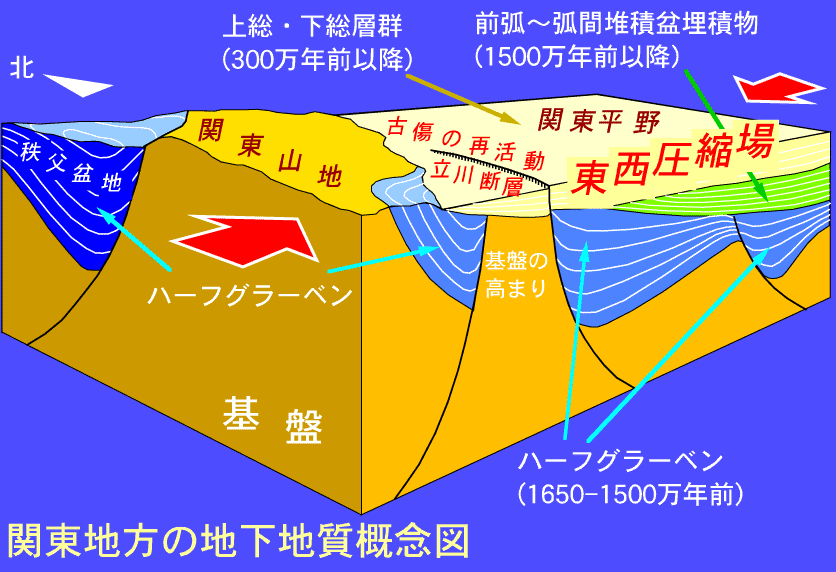
『海溝型巨大地震への挑戦』
http://leobull.blogspot.com/2010/01/blog-post_31.html
> 海溝型巨大地震では、広い範囲で長い揺れが続きます。最近の研究では、超低周波振動(2Hz 程度の揺れ)が、巨大建造物の固有振動周期と共振を起こすことで、これまで予測されていない壊滅的被害が心配されています。
> やわらかい関東ローム層上にある首都圏では、ゆれが15分以上収まらないというシミュレーションは衝撃的でした。これまでに作られた超高層ビルなどは、強い震度に耐えられる設計になっていますが、ゆっくりとした長周期・長時間の揺れは想定されておらず、耐えられずに崩壊するものも多いとの予測があります。
> 海溝型地震のもうひとつの特徴は、巨大な津波を伴う、という事です。南海地震のシミュレーションでは、高知市はプレートの跳ね上がりの反動で地盤が海面下に沈下するため、津波により一ヶ月以上も水没するとのこと。
↑これは南海トラフ（プレート境界型）地震のシミュレーションなのだが、その南海トラフ（プレート境界型）地震の超低周波振動でも関東ローム層上にある首都圏の超高層ビル（または高層ビルも？）が倒壊する危険性があるようです。
『長周期の揺れ大丈夫？超高層ビル診断技術開発へ』
http://www.yomiuri.co.jp/science/news/20120130-OYT1T00710.htm
> 長周期地震動は、震源から遠く、震度の小さい場所にも被害を及ぼす。
> 東日本大震災では、震源から約８００キロ離れ、周辺の震度が３だった大阪府の咲洲(さきしま)府庁舎（５５階建て）が約１０分間揺れ、最上階付近の振幅は最大約２・７メートルに達し、天井や壁面が損傷した。東京でも高層階で天井が破損した
> 高層建築の多い大都市では、建物の安全確認に時間がかかったり、長期間使用できなくなったりするなど、特有の弱点があることが明らかになった。
～～～～～～～～～～～～～～～～～～～～～～～～～～～～～～
【動く可能性があるプレート境界】
動く可能性があるプレート境界は下記図の「黄緑の線（相模トラフ、日本海溝）、緑の線（千島海溝）、水色の線（駿河トラフ、南海トラフ）、青の線（琉球海溝）」のプレート境界に接する（丸で囲まれた）震源域、「黄色（「糸魚川（いといがわ）－静岡」構造線）」の線の周辺の震源域、。
プレートが沈み込んでいる場合、震源域は その沈み込んでいるプレート境界面となる、つまり「黄緑の線（相模トラフ、日本海溝）」の震源域は丸で囲まれた「関東、房総沖」、「緑の線（千島海溝）」の震源域は丸で囲まれた「十勝沖、根室沖」、「水色の線（駿河トラフ、南海トラフ）」の震源域は丸で囲まれた「東海、東南海、南海」などと想定される、「青の線（琉球海溝）」に関しては下記『スマトラ級「"超"東海地震と連動の琉球海溝地震」もあり？』参照。
『動く可能性があるプレート境界』図
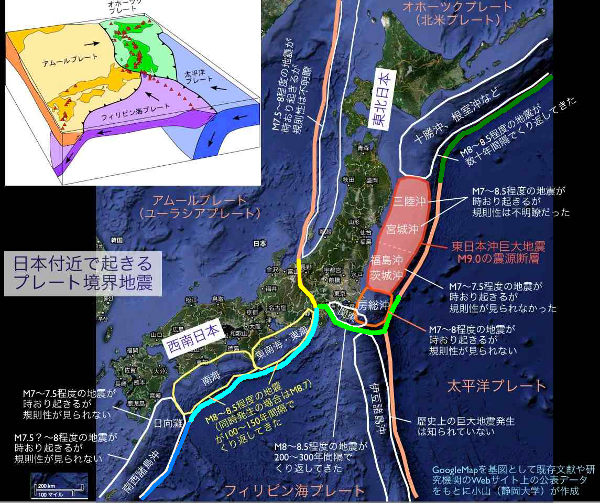
2011年11月18日『向こう１カ月、Ｍ７超の余震確率は１５％ 東日本大震災』
http://www.asahi.com/science/update/1118/TKY201111180594.html
> 東日本大震災の震源域やその周辺で、１カ月間にＭ７以上の余震が発生する確率は１５％との見通しを１８日、地震予知連絡会で気象庁が発表した。余震の数は減ってきているが、大地震が発生する確率は、震災前に比べて７倍程度高く、注意が必要と呼びかけている。Ｍ７は震源の近くだと震度６弱以上になる可能性もある地震規模。１５日～１２月１４日の１カ月間の発生確率を計算した。
↑『向こう１カ月、Ｍ７超の余震確率は１５％ 東日本大震災』の余震確率１５％は低いように感じるかもしれませんが、気象庁は恐らくスマトラ島沖の（2004年12月26）超巨大地震(M9.1～9.3)の「約3ヵ月後」に発生した（2005年3月28日）（メダン南西沖）ニアス地震(M8.6～8.7)に対応する地震を想定していると思われ、（3.11 を起点として経過した期間を考えれば）当然 かなりヤバイ状態なんじゃないかと言う気はします（その後、数年に渡り なんども発生しているので、（気象庁は）当然 そのような事態を想定していると思われます）。
この「東日本大震災の震源域」は上記『動く可能性があるプレート境界』図の赤く塗られた分部、「その周辺」が「黄緑の線（相模トラフ、日本海溝）、緑の線（千島海溝）」のプレート境界に接する（丸で囲まれた）震源域。
（震源域はプレートが沈み込んでいるプレート境界面となるので）黄緑の線の震源域は丸で囲まれた「関東、房総沖」、緑の線の震源域は丸で囲まれた「十勝沖、根室沖」と想定される。
なお、プレート境界ではないが上記「（東日本大震災の震源域の）その周辺」には下記「アウターライズ地震」も想定されていると思われる。
2012年01月22日『「アウターライズ地震」が列島を襲う』
http://gendai.ismedia.jp/articles/-/31609
http://gendai.ismedia.jp/articles/-/31609?page=2
http://gendai.ismedia.jp/articles/-/31609?page=3
http://gendai.ismedia.jp/articles/-/31609?page=4
http://gendai.ismedia.jp/articles/-/31609?page=5
> 本震（3.11 東日本大震災）の震源域から日本海溝をまたいだ（太平洋プレート上（アウターライズ）の）南北約500㎞にわたる地域で、地震の規模も本震(M9.0)に近いM8～9となる可能性が指摘されている（下記図 参照）。
『アウターライズ震源域』図

神戸大学名誉教授 石橋克彦のアムール・プレート東進説によれば、「3.11 東日本・大震災」による東日本の東方向への移動（下記図 参照）は、『南海トラフ、「糸魚川（いといがわ）－静岡」構造線』の ひずみ応力も増加したと推定している。
『3.11 東日本・大震災」による東日本の東方向への移動』図

『スマトラ級「"超"東海地震と連動の琉球海溝地震」もあり？』
> 東京大学地震研究所地震火山災害部門の都司嘉宣准教授によると、津波の復元から887年の仁和地震（東海・東南海・南海連動型）をスマトラ沖地震（2004年）と同様の M9クラスの超巨大地震と推定している。また、歴史文献などの記録がない琉球海溝のプレート境界で発生する推定M9クラスの超巨大地震が、数千年に一度発生する可能性が、2006年に琉球大学と名古屋大学の研究者から示唆されている2007年から2009年にかけて琉球大学、名古屋大学、台湾中央研究院らの合同による海底地殻変動観測が行われ、その成果によれば、測定用の海底局が沖縄本島から北西方向へ年間7cm移動していることから、推測される固着域（アスペリティ）は幅約30-50kmでプレート間カップリング領域が形成されていることが判明した。名古屋大学大学院環境学研究科の古本宗充教授の論文によると、東海・東南海・南海の南海トラフから奄美群島沖の南西諸島海溝までの全長約 1000 km の断層が連動して破壊されることで、2004年のスマトラ島沖地震に匹敵するM9クラスの超巨大地震が発生する可能性がある。これは、御前崎（静岡県）、室戸岬（高知県）、喜界島（鹿児島県）の3つの海岸にある南海地震のものと推定されるものより大きな平均1700年（直近は約1700年前）の4隆起がある隆起地形が根拠になっている（下記『「東海地震と連動の琉球海溝」震源域』図参照）。
↑もし、「駿河トラフ、南海トラフ」と「琉球海溝」が連動した場合は中央構造線も動く（「隆起 または 沈降」する）のではないかと懸念されている。
中央構造線が動くと言うことは（プレート境界型に匹敵する）（中央構造線による）超巨大・直下型地震の可能性がある。
『「東海地震と連動の琉球海溝」震源域』図

『「東海地震と連動の琉球海溝」震源域』図
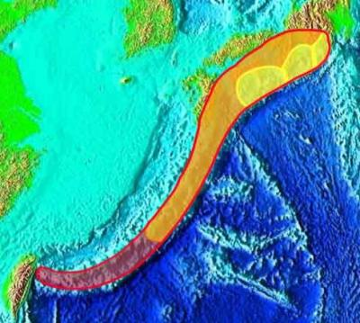
『「東海地震と連動の琉球海溝」震源域』図

～～～～～～～～～～～～～～～～～～～～～～～～～～～～～～
【参考】
『「糸魚川－静岡」構造線、フォッサマグナ、中央構造線』図
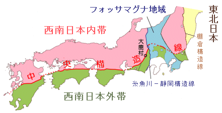
『フォッサマグナ』模式図
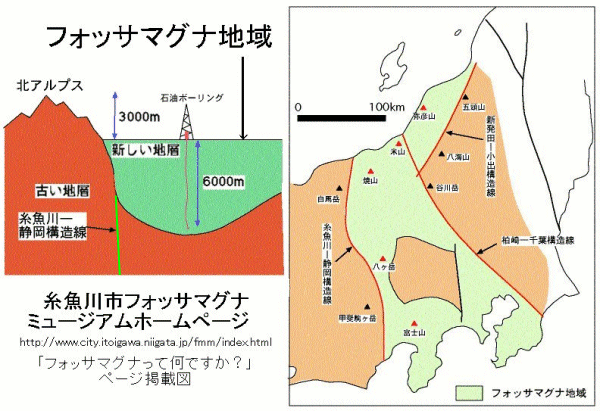
『「新潟-神戸」歪集中帯』
http://ja.wikipedia.org/wiki/%E6%96%B0%E6%BD%9F-%E7%A5%9E%E6%88%B8%E6%AD%AA%E9%9B%86%E4%B8%AD%E5%B8%AF
『「新潟-神戸」歪集中帯』図
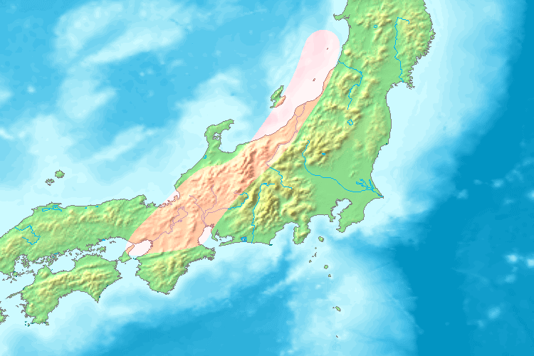
『アムール・プレート東縁変動帯』図
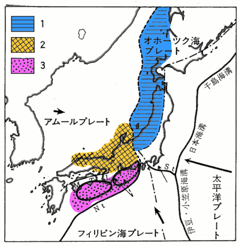
『日本の「トラフ、海溝」』図
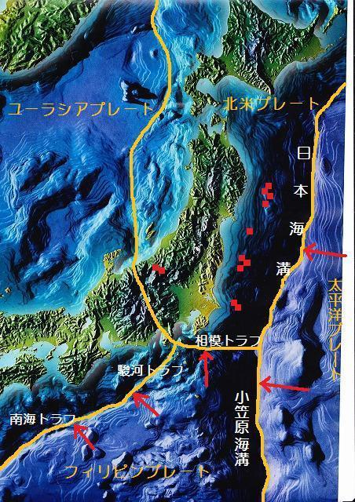
『日本の「トラフ、海溝」』図
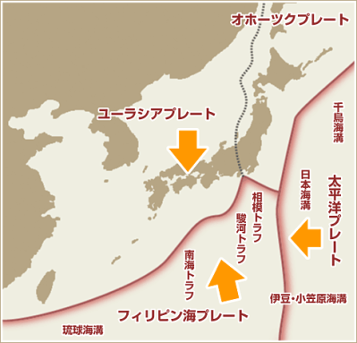
『極東周辺プレート』図
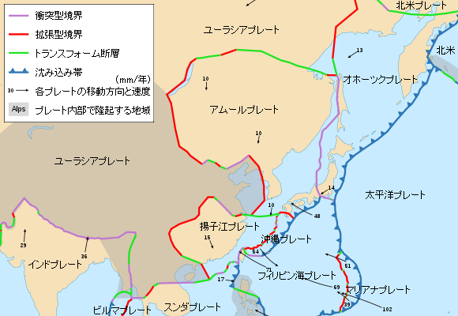
～～～～～～～～～～～～～～～～～～～～～～～～～～～～～～
『東京大地震（首都直下地震）の可能性』
http://tokyo-jishin.com/kanousei.html
↑ここで言う「プレート型」地震とは、立川断層帯のような活断層のことではなく、海溝型のようなプレート境界型のことで、それは海溝型が直下で発生すると言うことと同義と言って良いだろう。
それは海溝型の（核弾頭のごとき）エネルギーが直下で一気に炸裂すると言うことを意味している。
『横浜に最大波５メートル、県が「慶長型地震」で津波高を試算』
http://news.kanaloco.jp/localnews/article/1112180011/
2012/07 『３日の東京湾地震…実は大津波の前兆か！大学教授が警告』
http://news.livedoor.com/article/detail/6728364/
『三番瀬の干潟面積、３年間で半減…地盤沈下か』
http://www.yomiuri.co.jp/eco/news/20120614-OYT1T01127.htm
地図 『千葉県船橋市』
http://goo.gl/maps/Gk5n
『南海トラフ巨大地震の新想定 高い津波、強い揺れ拡大』
http://sankei.jp.msn.com/science/news/120202/scn12020208090001-n1.htm
http://sankei.jp.msn.com/science/news/120202/scn12020208090001-n2.htm
『これは何の予兆なのか 琵琶湖・富士山・桜島に不気味な異変が起きている』
http://gendai.ismedia.jp/articles/-/31725
http://gendai.ismedia.jp/articles/-/31725?page=2
http://gendai.ismedia.jp/articles/-/31725?page=3
http://gendai.ismedia.jp/articles/-/31725?page=4
『首都直下型大地震解説インタビュー』
http://www.nikkeibp.co.jp/sj/2/interview/19/index.html
http://www.nikkeibp.co.jp/sj/2/interview/19/index1.html
http://www.nikkeibp.co.jp/sj/2/interview/19/index2.html
『クラッシュ症候群（シンドローム）』
http://bosailabo.jp/point/emergency/bls_p04.htm
↑家具の転倒防止は必須。
できればドアの開閉不能 対策もすべき。
地震発生時のビルからのガラス飛散、外に出た時にビルからガラスが降って来るかもしれないので要注意。
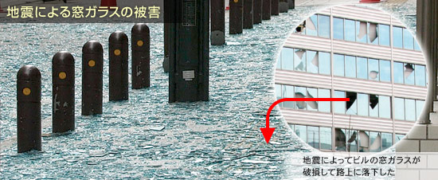
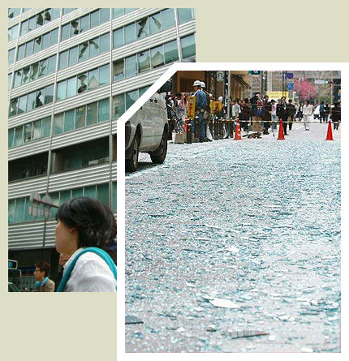
火災旋風
http://ja.wikipedia.org/wiki/%E7%81%AB%E7%81%BD%E6%97%8B%E9%A2%A8
『関東大震災の教訓は活かされているのか。火災旋風と津波被害など～～その１』
http://blog.zaq.ne.jp/shibayan/article/123/
『関東大震災の教訓は活かされているのか。～～その２(山崩れ・津波)』
http://blog.zaq.ne.jp/shibayan/category/34/
～～～～～～～～～～～～～～～～～～～～～～～～～～～～～～